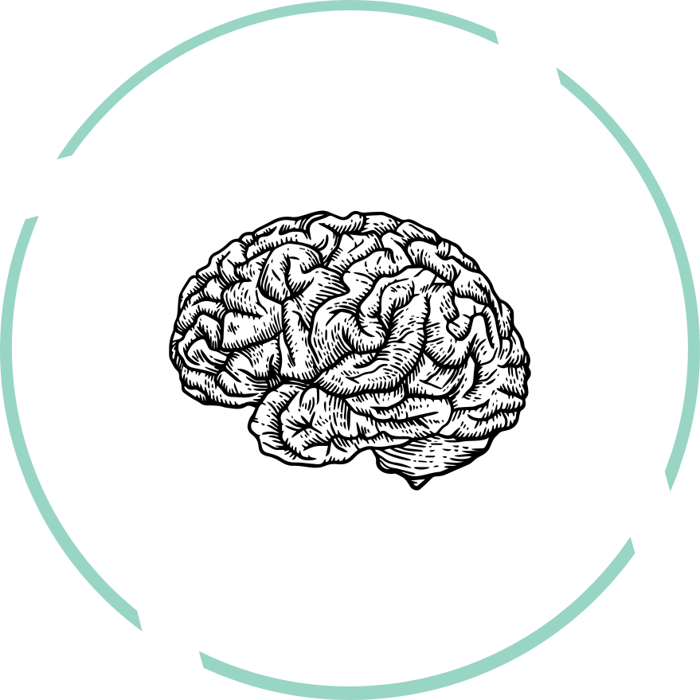
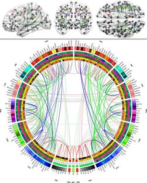

Irimia Lab is exploring a future without the adversities of brain aging and injuries.

We are a group of interdisciplinary scientists leveraging neuroimaging, electrophysiology, machine learning, and computation to study brain aging and degeneration in traumatic brain injury, Alzheimer's disease and related dementias.
The past few decades have witnessed remarkable progress on elucidating the disease mechanisms of the aging brain. Imaging now facilitates mapping of neural network dynamics in exquisite detail, with noteworthy consequences for medicine and society. Our laboratory has made contributions to mapping the reorganization and of brain connections after trauma and to understanding the relationship between neural injury and Alzheimer's disease.
The study and treatment of traumatic brain injury (TBI) in older adults is of high clinical priority. We use multimodal neuroimaging (MRI, DTI, PET), electrophysiology measurements (EEG) and computational models to study how brain aging and the subsequent degradation of its function are affected by TBI. Throughout the past 15+ years, approaches afforded by fields as varied as nonlinear dynamics, network theory, machine learning, multivariate statistics and scientific visualization have allowed us to quantify functional abnormalities of the nervous system and to contribute to the development of novel, patient-tailored approaches to clinical patient care. We have developed the connectogram, an attractive approach for the mapping and visualization of brain wiring. In conjunction with network-theoretic analysis, connectograms have been adopted at 100+ research centers worldwide and its growing use has been highlighted prominently by Nature, Nature Methods, Discovery Magazine, the New York Times, the Los Angeles Times, CNN, NBC, and others.
We’re riding this wave of radical industry changes.

We're happy to hear from you.
Contact us for feedback, research opportunities, or just to say hello.
Let's connect.